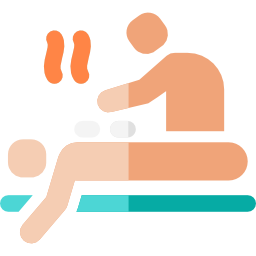

Durante a primeira consulta deve sempre referir todos os sintomas que tem e que lhe causam desconforto e sofrimento para além da queixa principal que motivou a sua deslocação.
Todas as queixas são importantes e, ao referir as mesmas, ajudam a melhor definir o seu quadro energético. Exames auxiliares de diagnóstico são também suscetíveis de serem trazidos para a consulta. No entanto, não constituem, em si, elementos de análise em termos de medicina chinesa. Sessões de Acupunctura e prescrição de Fitoterapia são a base de todos os esquemas terapêuticos. Consoante o caso podem ser complementados também por sessões de Tui Na. Conselhos dietéticos e recomendações de exercícios energéticos, em alguns casos específicos, podem ser igualmente considerados.
A alimentação Funcional é parte do tratamento, só assim os resultados serão garantido, bem como todas informações dadas na consulta tendo que ser cumpridas à risca.
COMSULTA DE REAVALIAÇÃO
Ao longo do tratamento, a medição da sua resposta à terapêutica terá marcos no tempo através de consultas de reavaliação. Em Medicina Chinesa, “cada caso é um caso”. Adaptar a terapêutica à sua resposta individual é fulcral para a obtenção de resultados mais rápidos.
OUTRAS CONSULTAS
Além das Consultas de Clínico e das Reavaliações, disponibilizamos também Consultas Especificas: - Consulta de Emagrecimento, Consultas de Tabagismo e Consultas de Check Up e de Nutrição.

TUI NA
O Tui Na é a técnica manual da Medicina Chinesa. O Tui Na conduz, gradua e regulariza a circulação da energia, sangue e líquidos orgânicos comprometida no quadro energético apresentado.
Em determinadas patologias, o Tui Na acelera o alívio e a obtenção de resultados mais rápidos logo no início dos tratamentos (por exemplo, em caso de lombalgias, cervicalgias, ciatalgias, tendinites, cefaleias, dor de costas, dor abdominal, omalgia, ansiedade, depressão …).
Noutros contextos clínicos, o Tui Na assume mais um papel de escudo perante os fatores externos que costumam prejudicar a doença.
Devido a sua natureza relaxante, o Tui Na é utilizado no Departamento de Prevenção e Promoção da Saúde na forma de Tui Na Care, para cuidados regeneradores e relaxantes.
DOMICÍLIOS
Seja perante casos clínicos demasiado complexos que impeçam a deslocação do paciente, seja por outra ordem de razão, é possível solicitar junto das Clínicas Pedro Choy a realização de consultas e tratamentos em regime de domicílio.
Caso tenha duvidas neste caso contacto para mais esclarecimentos.